First idea
The “Living Room Newsroom” fixation
News unfolding across your coffee table in 3D, with timelines, avatars, and satellite maps. It worked. For that moment. But only for that moment.
Media app | Project | Mixed reality
Endless headlines at 2 AM. World-changing events that feel flat. Important stories buried under clickbait.
Read the story ↓
Media app | Project | Mixed reality
Endless headlines at 2 AM. World-changing events that feel flat. Important stories buried under clickbait.
“Why is the most important stuff in the world… so boring to read?”
The short version
Endless headlines, flat stories and clickbait bury what matters, so people skim, switch off or avoid the news altogether.
The gap ↓I redesigned news as an adaptive AI experience that learns what you care about and adapts to where you are: commute, lunch break, or couch.
The answer ↓How might we deliver just enough personalised news, in whatever mode the moment calls for?
How I got there ↓Daily news stays free. AR stories and deep dives sit behind a subscription, with opt-in personalisation and light sponsors.
What pays for it ↓01 · The gap
10 interviews · 30 surveys · industry reports
of Indians paid for online news in 2023.
Source [1]avoid news because it's boring or negative, up 3 points year-on-year.
Source [2]News apps hold just 10% of India's digital news market.
Industry reports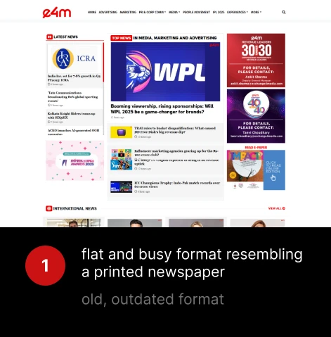
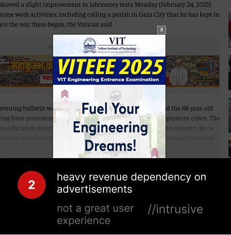
Aarav, 27
Digital Marketing Associate · Delhi
“I don't get a lot of time to read news. I mostly scan through Inshorts and keep up with social media news bits.”
Apps he uses
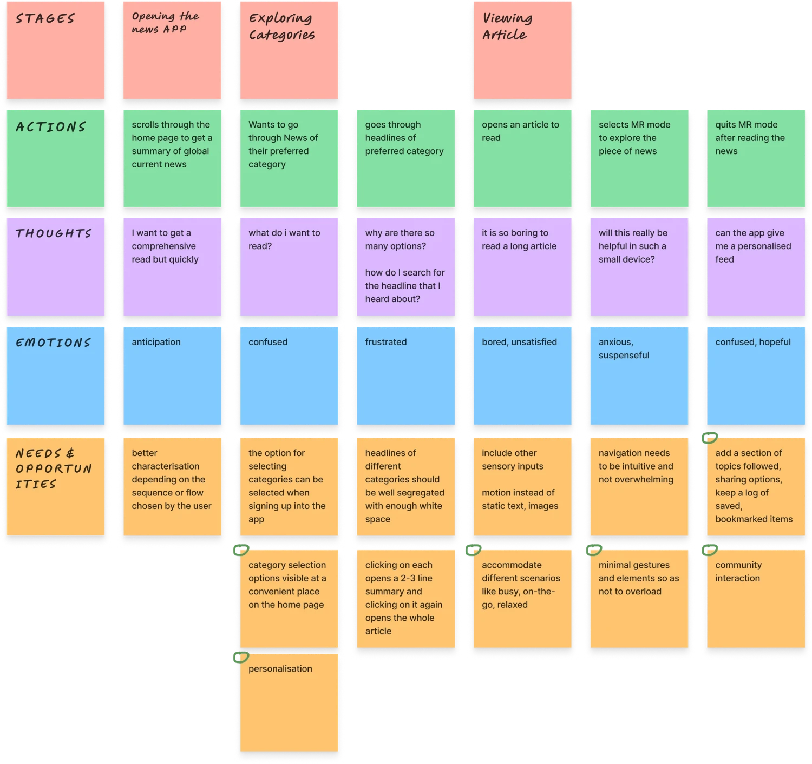
02 · The answer
Three modes, shaped by context, plus a community loop that keeps curiosity alive.
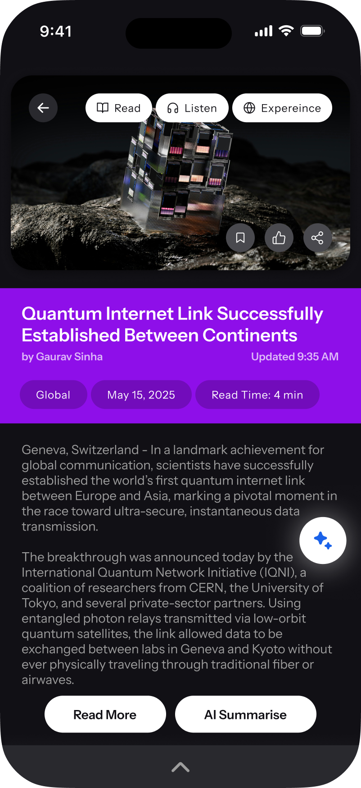
Scenario · The commuter
Aarav has 8 minutes on the bus and no time for long reads. Snapp gives him the full story in under a minute, as a 60-second read or a 30-second voice clip, with bullet points and visual cues.
Idea spark
A glanceable, AI-summarised mode. Bullet-point news that floats at eye level. Swipeable. Smart. No noise.
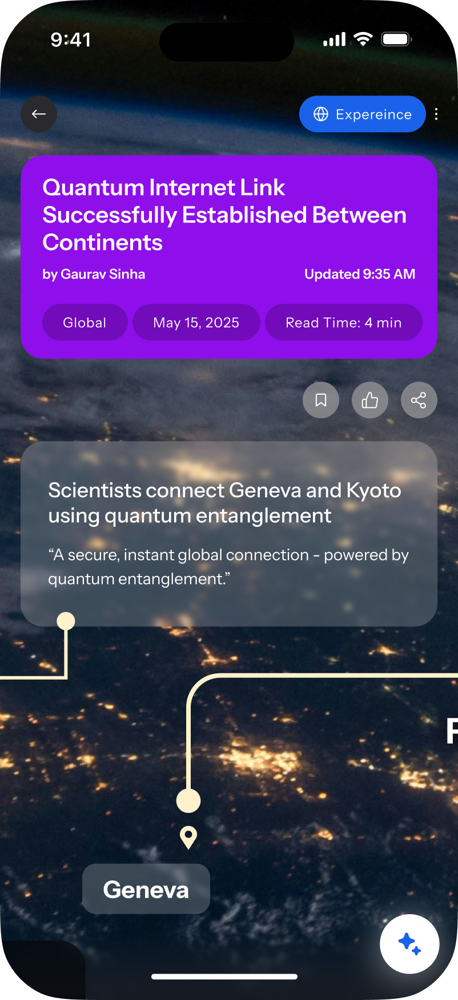
Scenario · The deep dive
It's 9 PM and Aarav is on his sofa with time to think. He's curious about the Russia-Ukraine conflict but finds text articles overwhelming. The story opens like a scene, where he can walk through characters, events and locations in 3D.
Idea spark
Reimagine long-form stories as immersive experiences. Explore data, characters and maps at your own pace. Not flat, not passive, but spatial and interactive.
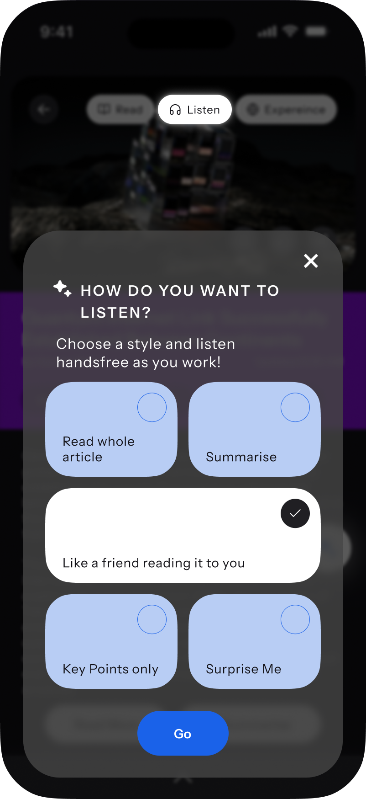
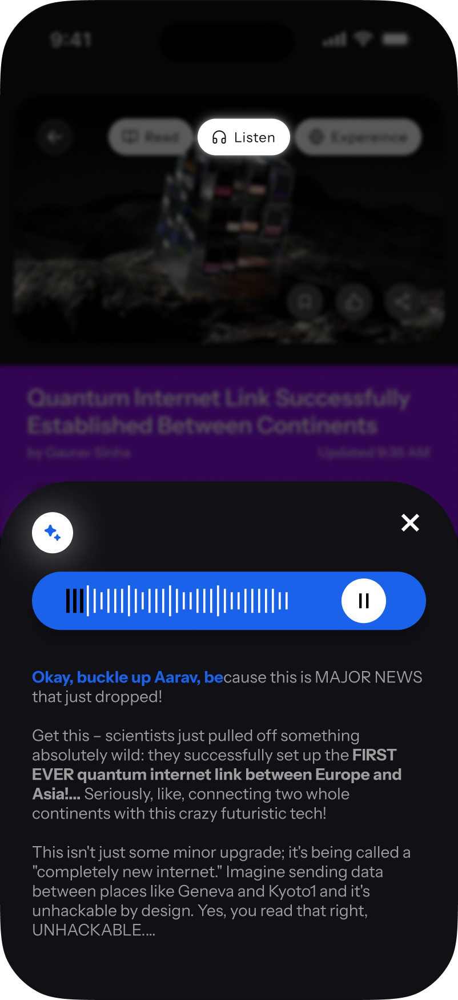
Scenario · The multitasker
Aarav is cooking dinner, hands busy and eyes tired. Snapp carries on his story in a natural AI voice, picking up exactly where he left off reading, with smart transitions and optional ambient effects.
Idea spark
A seamless switch to voice narration. Not a separate app. Just one tap, and the news follows you, ambiently.
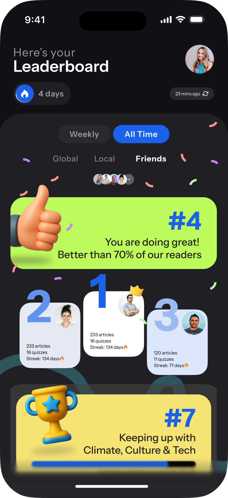
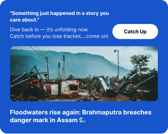
Community · The loop
Community, not just competition. See what friends are reading, compare curiosities and rise together.
A personalised loop
Snapp evolves with you: your pace, your interests, your modes.
03 · How I got there
Existing news apps optimised for either breadth (InShorts, Google News) or depth (DailyHunt, The Hindu). None optimised for context: switching modes between commute, work break, and bedtime. That gap became the core of Snapp.
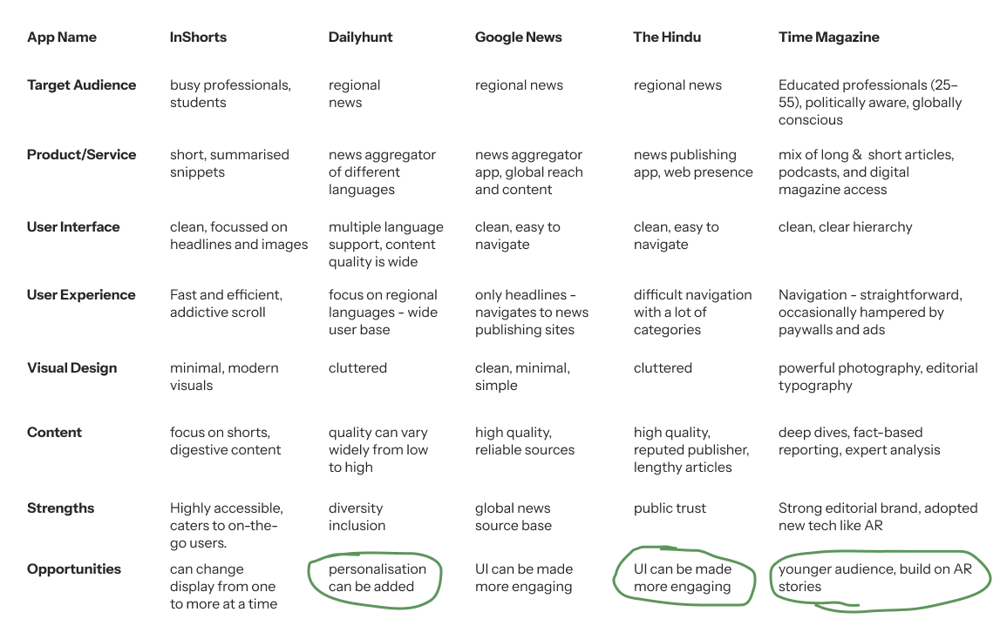
How might we
First idea
News unfolding across your coffee table in 3D, with timelines, avatars, and satellite maps. It worked. For that moment. But only for that moment.
Fumble
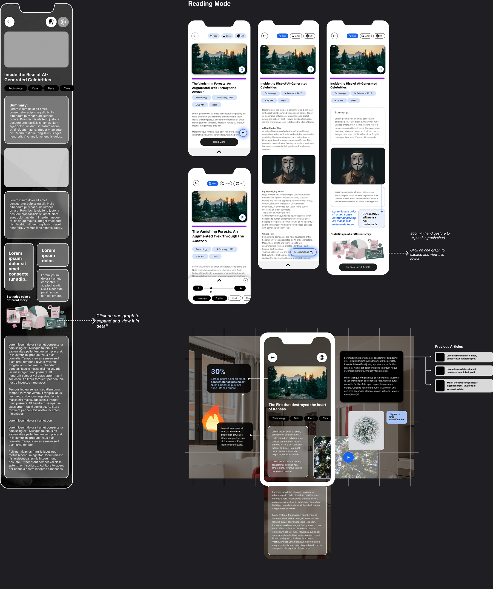
04 · What pays for it
Up next
Icon Studio: A Skill That Builds Icon Libraries